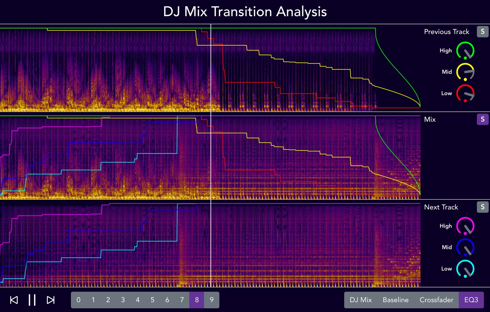
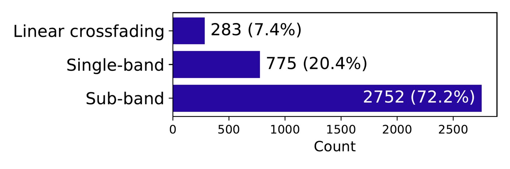

Reverse-Engineering The Transition Regions of Real-World DJ Mixes using Sub-band Analysis with Convex Optimization
Abstract
The basic role of DJs is creating a seamless sequence of music tracks. In order to make the DJ mix a single continuous audio stream, DJs control various audio effects on a DJ mixer system particularly in the transition region between one track and the next track and modify the audio signals in terms of volume, timbre, tempo, and other musical elements. There have been research efforts to imitate the DJ mixing techniques but they are mainly rule-based approaches based on domain knowledge. In this paper, we propose a method to analyze the DJ mixer control from real-world DJ mixes toward a data-driven approach to imitate the DJ performance. Specifically, we estimate the mixing gain trajectories between the two tracks using sub-band analysis with constrained convex optimization. We evaluate the method by reconstructing the original tracks using the two source tracks and the gain estimate, and show that the proposed method outperforms the linear crossfading as a baseline and the single-band analysis. A listening test from the survey of 14 participants also confirms that our proposed method is superior among them. A web demo is available at this link.
Author Keywords
DJ mix, reverse-engineering, convex optimization, mixing, dance music
CCS Concepts
•Applied computing→Sound and music computing;•Information systems→Music retrieval;•Mathematics of computing→Convex optimization;
Introduction
A DJ mix is a sequence of music tracks that are arranged to flow seamlessly by a Disc Jockey (DJ) mainly in the context of electronic dance music. The role of DJs includes not only selecting the tracks and deciding the play order as a music curator but also making two consecutive tracks crossfade naturally or artistically as a performer. To make seamless transition from one track to another, DJs use dedicated mixer systems that allow them to control the musical characteristics of each track.
There have been significant research efforts to mimic DJs as a music curator, which is a task often called playlist generation [1][2][3][4][5]. Systems imitating DJs as a performer, namely automatic DJ, has also drawn research interests [6][7][8][9][10][11]. While the playlist generation research has been studied mainly in a data-driven way using user listening history or curated playlists, most prior arts in automatic DJs have used rule-based methods that capitalize domain knowledge rather than data-driven methods that learn from information extracted from real-world DJ mixes. Some previous studies attempted to analyze DJ mixes for potential use in automatic DJ. However, they are limited to track-level information such as track identification [12][13][14] or mix segmentation [15][16]. A few studies introduced methods to analyze DJ mixes but they used artificially generated datasets [17][18].
A recent study collected 1,557 real-world DJ mixes and 13,728 tracks played in the mixes, and conducted large-scale mix-to-track subsequence alignment to extract the musical actions from DJs [19]. From the mix-to-track subsequence alignment, they estimated cue points that indicate the start and end positions of the tracks as a musical decision of professional DJs. Using the cue points, in turn, they located the transition region where two consecutive tracks crossfade. Through statistical analysis of the alignment, cue points and transition regions, they showed that 1) DJs tend not to change tempo/key of original tracks much, 2) DJs take care of musical structures when they make transitions, and 3) DJs select similar cue points. However, this study focused on musicological analysis using beat-level audio features and the statistical results are not directly applicable to automatic DJ.


A screenshot of web demo based on three-band analysis results. The top and bottom spectrograms are of original tracks, which are mixed by a DJ in the DJ mix shown as a spectrogram at the middle. The colored lines can explain how the DJ adjusted each sub-band gain of the previous/next track over time using a crossfader and three-band EQs. As the example audio is being played, the EQ knobs on the right side are changed according to the extracted EQ value at the current time position which is indicated by the vertical white line.
In this paper, we take a deep dive into the transition region in the DJ mix to extract DJ mixer control. DJs modify volume, timbre or even tempo on a DJ mixer system when they switch one track to another. The transition region is the period that DJs use their skills significantly to make the mix seamless and creative. In order to extract the actions from DJs, we reverse-engineer the transition region using sub-band analysis with constrained convex optimization. Figure 1 visualizes a result example of the sub-band analysis. The optimization is performed by minimizing the distance between DJ mixes and mixed tracks with sub-band gains. We evaluate the accuracy of the sub-band gain trajectories by reconstructing the original mix using the two source tracks and the estimated gain trajectories. For quantitative evaluation, we compute the reconstruction errors, comparing the proposed method to a linear crossfading and the previous approach based on a single band analysis. From the best method of each transition region, we also analyze how often DJs control the audio effect between crossfader and EQs. Furthermore, we recruit 14 participants and conducted a listening test for qualitative evaluation. The results show that our approach is superior in both objective and subjective tests.
Transition Analysis Methods
In this section, we describe two transition analysis methods which extract temporal gain trajectories that explain how DJs control the DJ mixer system. First, we describe single-band analysis which assume DJs used a single crossfader, which is firstly proposed in [17]. Then, we extend the method to sub-band analysis, which assumes DJs use three-band EQs along with the faders.
Single-band Analysis
Let ∈RT×F denote the power spectrogram of a transition region which has frames and frequency bins, and ∈RT denote a time-series vector for a track which contains the gain value at each time frame. is normalized by the minimum and maximum levels so that it has a range of . Let prev and prev denote the power spectrogram and the gain vector of the previous track, and next and next denote those of the next track. Then, we define the power spectrogram of their mix mix as follows:
where denotes the Hadamard product (or element-wise multiplication). The gain vectors prev and next are optimized so that mix approximates the power spectrogram of the original DJ mix dj through the following convex optimization that minimizes the mean squared error (MSE) between mix and dj
We assume that prev and next are aligned to dj so that their beats are synchronous. The gain values are forced to have a range of by the first line of Eq. 3, and the gain of the previous track prev always decreases and the gain of the next track next always increases in the second line of Eq. 3. The sum of gains are always one by the last line of Eq. 3 because we assume that DJs use constant power crossfaders.
Sub-band Analysis
The single-band analysis estimates the control of a single volume crossfader between two tracks. In practice, the most commonly used setting in DJ mixer systems is three-band EQs and one fader for each track. DJs control the EQs and fader considering the musical characteristics of each sub-band. In our sub-band analysis setup, we ignore the fader as a variable to estimate because it can be approximated by adjusting the three-band EQs simultaneously (also, adding the fader as a variable to the objective function makes the optimization problem non-convex). Therefore, the estimate results can be regarded as the lumped sub-band gains from the three-band EQs and faders.
The definition of the mixed power spectrogram in sub-band analysis is similar to Eq. 1 but the power spectrograms are mixed in each sub-band and the gain vectors are also defined for each sub-band. Let denote the index of a sub-band, and i and i denote the power spectrogram and gain vector of the -th sub-band. Then, the mixed power spectrogram for the -th sub-band is defined as:
The convex optimization can be performed aggregating the MSE values over sub-bands as follows:
We observed that the lower frequency bins generally have more energy than the higher frequency bins and, as a result, the optimizer tend to focus on lower frequencies bins. To solve this problem, we normalized for each sub-band spectrogram i so that each sub-band has a range of using the following equation:
We call this normalization sub-band scaling. The denominator is the maximum peak as a scalar value computed over time and frequency of the three power spectrograms so that their original relative energy differences are preserved.
Experiments
Dataset
We used the DJ mix dataset that contains metadata collected from 1001Tracklists1 and audio files downloaded separately using links to media services [19]. The number of transitions were 20,756 in the dataset but we filtered out the transitions where the previous and next tracks are not fully overlapping in the transition region. As a result, we used 3,930 transition regions. The filtered transitions are from 1,216 DJ mixes and include 5,105 unique tracks.
Implementation
Before the transition analysis, we temporally aligned the tracks to the mixes using a subsequence dynamic time warping (DTW) following the previous study [19] and then applied the waveform similarity and overlap add (WSOLA) to the tracks so that the tracks are time-scaled and synchronized to the mix on the same beats. We used Librosa [20] for DTW and PyTSMod [21] for WSOLA. We detected the transition regions from the result of the previous study [19] and sliced the power spectrogram of the transition region with some margin to contain at least 140 beats.
All audio tracks have a sampling rate of 44,100Hz and mel-spectrograms with 128 mel bins are used for the power spectrogram. We computed the spectrograms using Librosa [20] with a hop size of 2,756 samples (16ms) and a window size of 5,512 samples (32ms). As a result, the gain vector have 16 elements (or frames) per second. Following a popular DJ mixer, we use three bands for sub-band analysis, of which low and high cut-off frequencies are 180Hz and 3000Hz, respectively. We used CVXPY [22] for convex optimization. The source code2 and the web demo3 in Figure 1 are available at the links.
Quantitative Evaluation
To evaluate the performance of the transition analysis methods, we reconstructed the mixes using the analysis results and the original tracks, and compared the reconstructed mixes to the original DJ mixes using root mean square error (RMSE) between their log compressed spectrograms in decibel (dB) units. Also, the reconstruction error is computed for each sub-band. In case of the single-band analysis, the reconstructed mix signal is generated multiplying the optimized gain value to the track signals for each time frame. For the reconstruction of sub-band analysis results, we implemented three-band EQs using the 2nd order digital Butterworth filter and applied the EQs to the tracks using the optimized sub-band gain values at each time frame. We also evaluated the effect of the sub-band scaling method. As a baseline experiment, we also evaluate a method where two tracks linearly crossfade over time to have a constant power without any optimization. Note that the reconstruction is processed in the time domain using the original tracks and the three-band EQs but the evaluation is processed in the time-frequency domain to compute the RMSE of the spectrograms. We used the default parameters of Librosa to compute the spectrograms for evaluation.
Explaining the Mixing Control of DJs
In real-world DJ mixing, DJs may control only the crossfader, both the EQs and faders or their combinations. Thus, the best analysis method that minimizes the reconstruction error can be different at each transition region. In fact, the best analysis method may explain the DJs’ control action. For example, if the single-band analysis has the lowest reconstruction error at a transition region, we can assume that the DJ made the transition using the crossfader only. On the other hand, if the sub-band analysis has the lowest reconstruction error at a transition region, we can assume that the DJ used the EQs as well. Therefore, we report the best of the three compared methods and also count the number of having the lowest reconstruction error.
Perceptual Evaluation
We also conducted a listening test recruiting 14 participants who enjoy listening to music. For each trial, given a transition audio segment from a DJ mix, the participants were asked to listen and select the most similar reconstructed audio among three different methods. The three audio clips were reconstructed from the baseline method, single-band analysis and sub-band analysis. The order of three methods are changed for every trial, and the number of total trials were five for each subject and they were selected randomly excluding the mixes with DJ voices. All audio tracks had a length of 48 seconds.
Results
Reconstruction Error
Reconstruction error of transition analysis methods.
Method | RMSE (dB) | |||
|---|---|---|---|---|
All | Low | Mid | High | |
Linear crossfading (baseline) | 7.687 | 8.928 | 7.497 | 7.629 |
Single-band analysis [17] | 7.428 | 8.191 | 7.278 | 7.426 |
Sub-band analysis | 7.333 | 7.953 | 7.042 | 7.563 |
6.895 | 7.904 | 6.798 | 6.741 | |
The best of the three methods | 6.714 | 7.810 | 6.533 | 6.675 |
Table 1 shows the results of the reconstruction error measured by RMSE in dB. The single-band analysis improves the baseline method, showing that the optimizing gains of crossfader better reconstruct the original mix. The three-band analysis outperforms the single-band analysis. With the sub-band scaling, the improvement is more significant. We observed that high-band gains are not analyzed correctly without the sub-band scaling because the high-band spectrograms have relatively lower energy and thus they do not contribute to the loss of convex optimization. We also report the best of the three methods, which achieves lower reconstruction errors than the sub-analysis method. This result indicates that the best gain estimate depends on the type of DJ mixing control as discussed in Subsection 3.4 (Explaining the Mixing Control of DJs).
Mixing Control Types


The number of transitions where each of the methods has the lowest reconstruction error.
Figure 2 shows the number of transitions where each of the methods has the lowest reconstruction error. This indicates that DJs use the crossfader only in 28% of cases and use EQs with faders in 72%. We also checked the transitions where the linear crossfading has the lowest errors. We found that the transitions contain DJ voices or beat tracking was not correctly performed, which made the two optimization methods fail to estimate the gains.
Listening Test
The listening test result: the number of votes for the most similar reconstruction to the original DJ mix in the transition regions.
Linear crossfading | Single-band | Sub-band (with scaling) |
|---|---|---|
13 (18.6%) | 10 (14.3%) | 47 (67.1%) |
The number of votes for the most similar reconstruction to the original DJ mix is summarized in Table 2 for each method. This result confirms that the sub-band transition analysis reconstructs the original mix best. The linear crossfading and single-band transition analysis methods have a similar number of votes. This indicates that the difference in the RMSE in Table 2 is not discernible between the two methods.
Conclusions
We proposed a method to analyze the DJ mixer control from real-world DJ mixes. We estimated the mixing gain trajectories using sub-band analysis with constrained convex optimization. We evaluated the reverse-engineering method by reconstructing the original tracks and showed that the proposed method is superior in both quantitative and qualitative tests. In addition, by finding the best estimate among the compared methods, we predicted the mixing control type on the DJ mixer systems. As future work, we plan to use the estimated gain trajectory and mixing control type as training data to model automatic DJ.
Acknowledgments
This research was supported by Basic Science Research Program through the National Research Foundation of Korea (NRF-2019R1F1A1062908).
Footnotes
Citations
- ↩Bonnin, G., & Jannach, D. (2013). A comparison of playlist generation strategies for music recommendation and a new baseline scheme. In Proc. Workshops at the aaai conference on artificial intelligence.
- ↩Bonnin, G., & Jannach, D. (2015). Automated generation of music playlists: Survey and experiments. ACM Computing Surveys (CSUR), 47(2), 26.
- ↩Bittner, R. M., & others. (2017). Automatic playlist sequencing and transitions. In Proc. International society for music information retrieval conference (ISMIR) (pp. 442–448).
- ↩Flexer, A., Schnitzer, D., Gasser, M., & Widmer, G. (2008). Playlist generation using start and end songs. In Proc. International society for music information retrieval conference (ISMIR) (pp. 173–178).
- ↩Shih, S.-Y., & Chi, H.-Y. (2018). Automatic, personalized, and flexible playlist generation using reinforcement learning. In Proc. International society for music information retrieval conference (ISMIR) (pp. 168–174).
- ↩Lin, Y.-T., Lee, C.-L., Jang, J.-S., & Wu, J.-L. (2014). Bridging music via sound effects. In 2014 ieee international symposium on multimedia (pp. 116–122). IEEE.
- ↩Schwarz, D., Schindler, D., & Spadavecchia, S. (2018). A heuristic algorithm for DJ cue point estimation. In Proc. Sound and music computing (SMC) conference.
- ↩Veire, L. V., & De Bie, T. (2018). From raw audio to a seamless mix: Creating an automated DJ system for drum and bass. EURASIP Journal on Audio, Speech, and Music Processing, 2018(1), 13.
- ↩Kim, A., Park, S., Park, J., Ha, J.-W., Kwon, T., & Nam, J. (2017). Automatic DJ mix generation using highlight detection. In International society for music information retrieval conference (ISMIR), late-breaking paper.
- ↩Huang, Y.-S., Chou, S.-Y., & Yang, Y.-H. (2018). Generating music medleys via playing music puzzle games. In Proc. AAAI.
- ↩Huang, Y.-S., Chou, S.-Y., & Yang, Y.-H. (2017). DJnet: A dream for making an automatic DJ. In International society for music information retrieval conference (ISMIR), late-breaking paper.
- ↩Sonnleitner, R., Arzt, A., & Widmer, G. (2016). Landmark-based audio fingerprinting for DJ mix monitoring. In Proc. International society for music information retrieval conference (ISMIR).
- ↩Manzano, P. S. (2016). Audio fingerprinting techniques for sample identification in electronic music. Friedrich-Alexander-Universität Erlangen-Nürnberg (FAU), Erlangen, Germany.
- ↩Lopez Serrano Erickson, P. (2019). Analyzing sample-based electronic music using audio processing techniques. Friedrich-Alexander-Universität Erlangen-Nürnberg (FAU), Erlangen, Germany.
- ↩Glazyrin, N. (2014). Towards automatic content-based separation of DJ mixes into single tracks. In Proc. International society for music information retrieval conference (ISMIR) (pp. 149–154).
- ↩Scarfe, T., Koolen, W., & Kalnishkan, Y. (2014). Segmentation of electronic dance music. International Journal of Engineering Intelligent Systems for Electrical Engineering and Communications, 22(3), 4.
- ↩Werthen-Brabants, L. (2018). Ground truth extraction & transition analysis of DJ mixes. Ghent University, Ghent, Belgium.
- ↩Schwarz, D., & Fourer, D. (2019). Methods and datasets for DJ-mix reverse engineering. In Proc. International symp. On computer music multidisciplinary research (cmmr) (pp. 426–437).
- ↩Kim, T., Choi, M., Sacks, E., Yang, Y.-H., & Nam, J. (2020). A computational analysis of real-world dj mixes using mix-to-track subsequence alignment. In Proc. International society for music information retrieval conference (ISMIR) (pp. 764–770).
- ↩McFee, B., Raffel, C., Liang, D., Ellis, D. P., McVicar, M., Battenberg, E., & Nieto, O. (2015). Librosa: Audio and music signal analysis in python. In Proc. Python in science conference (Vol. 8, pp. 18–25).
- ↩Yong, S., Choi, S., & Nam, J. (2020). PyTSMod: A python implementation of time-scale modification algorithm. In International society for music information retrieval conference (ISMIR), late-breaking paper.
- ↩Diamond, S., & Boyd, S. (2016). CVXPY: A Python-embedded modeling language for convex optimization. Journal of Machine Learning Research, 17(83), 1–5.